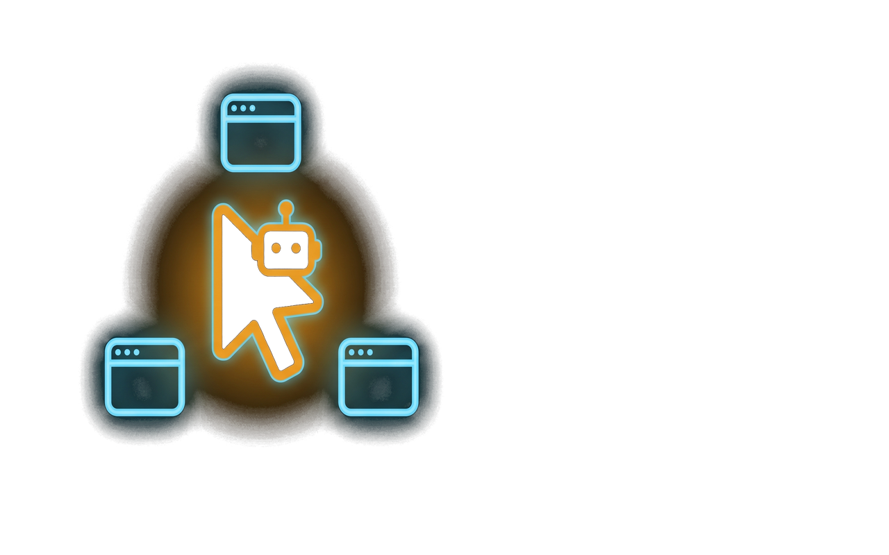
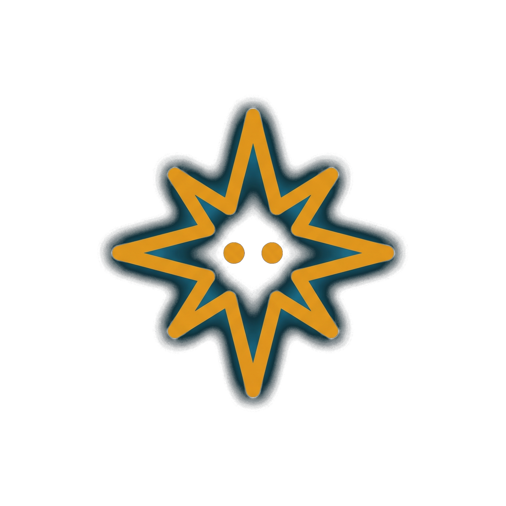
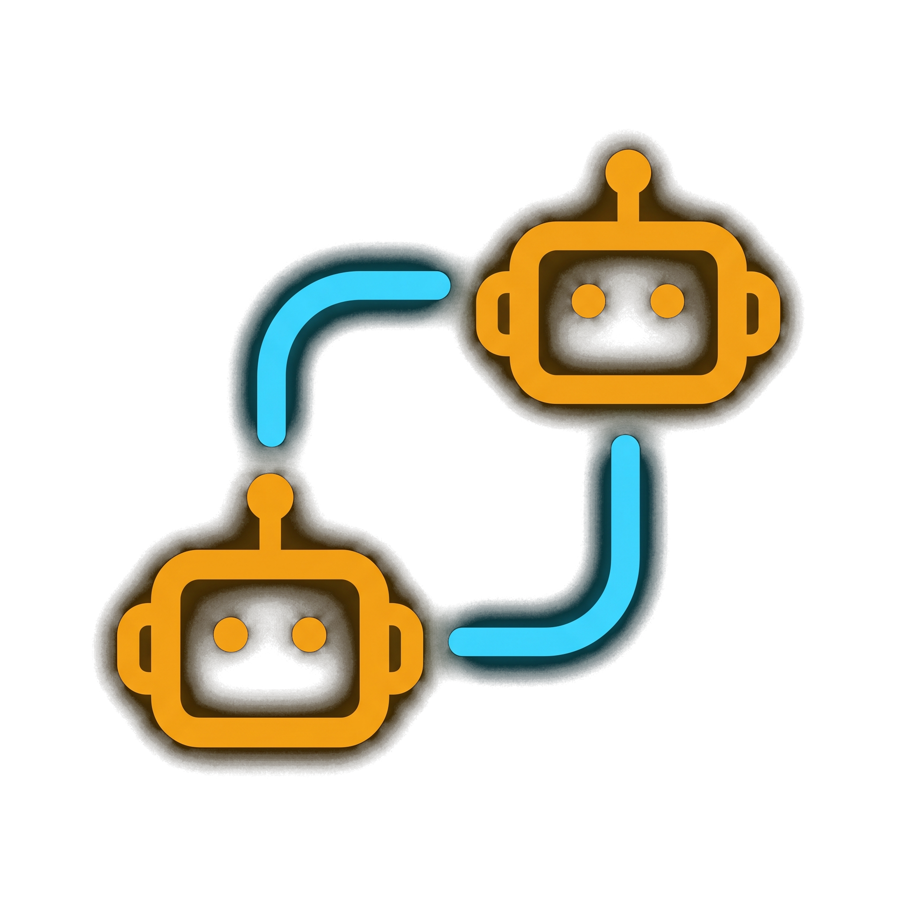
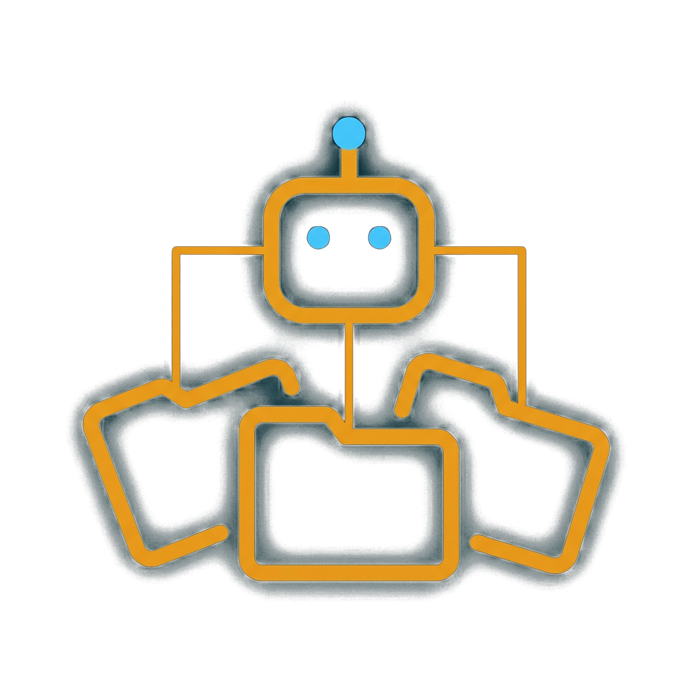
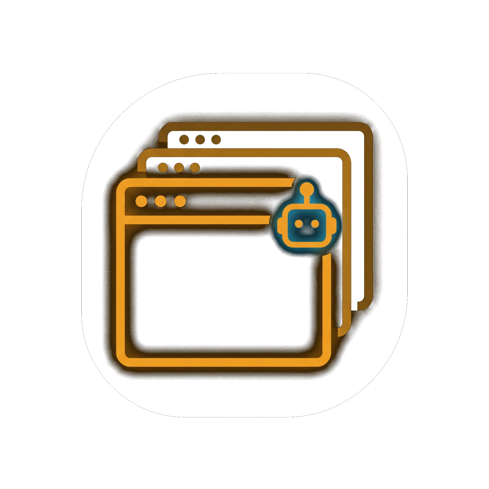
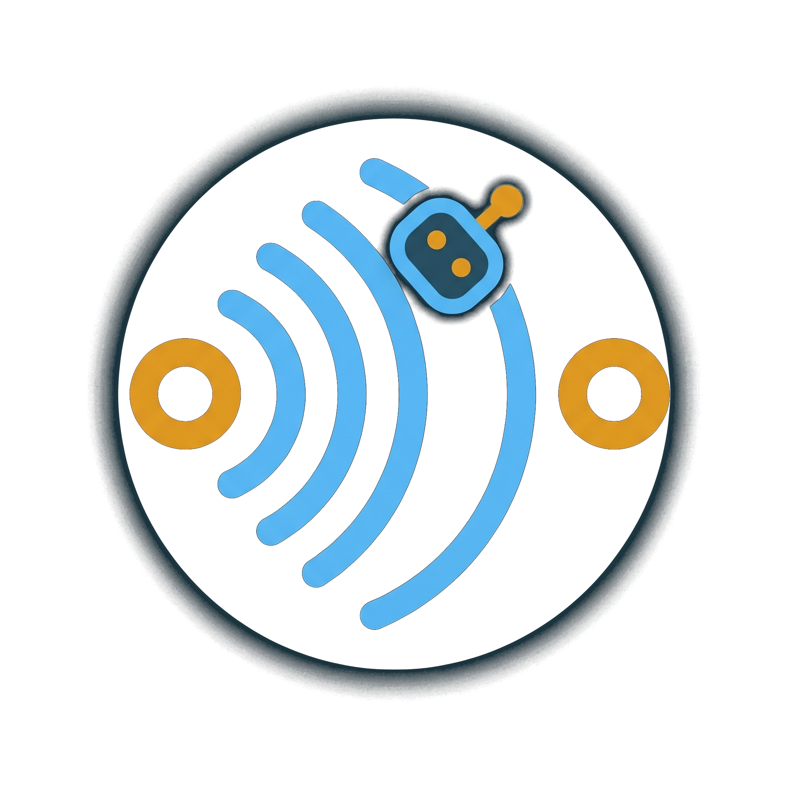
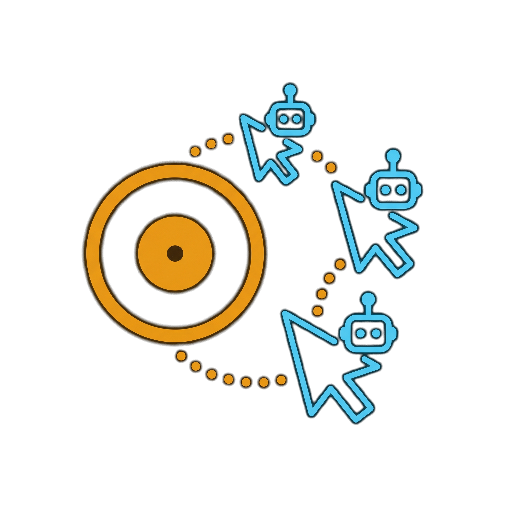
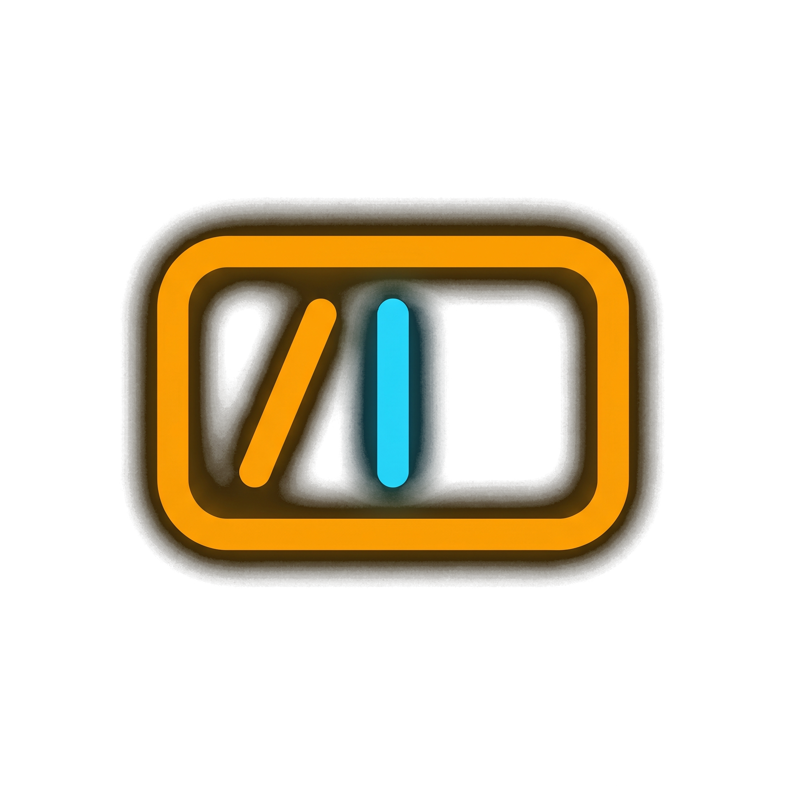
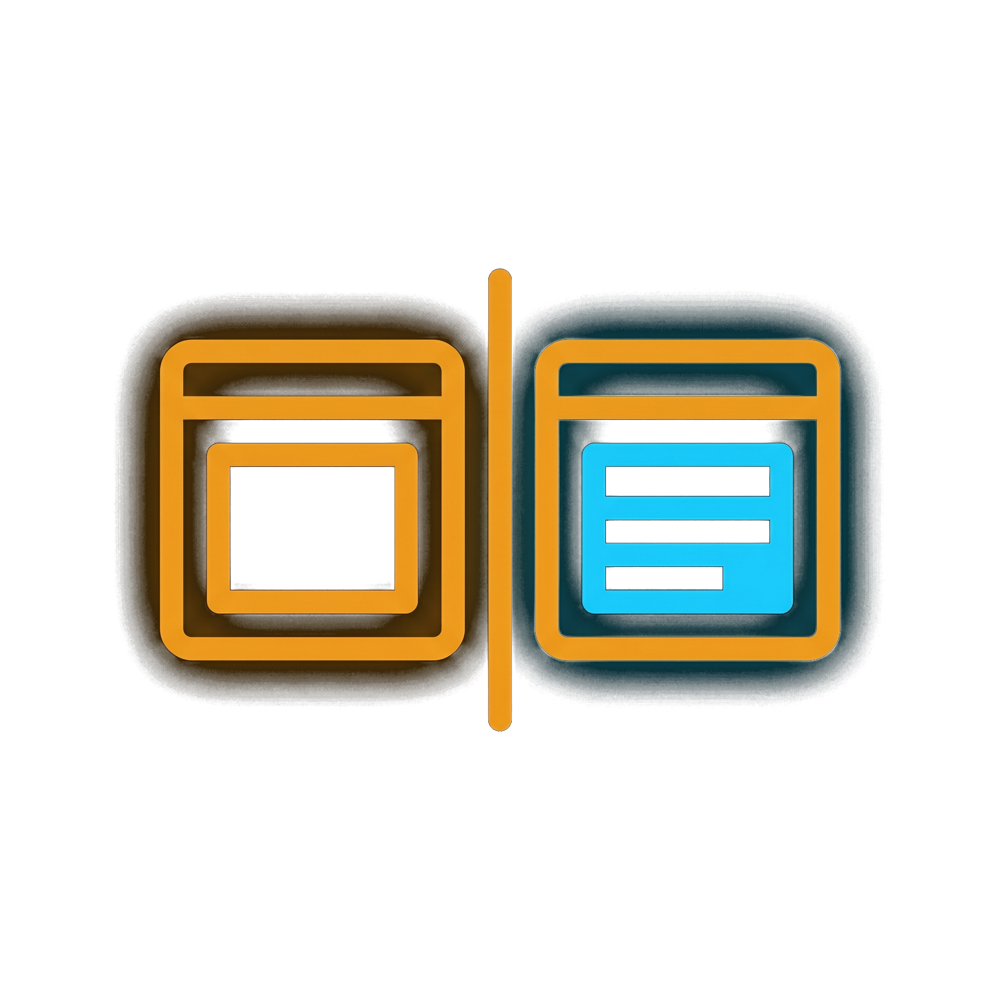

TurboWeb MCP wires any number of AI agents to any number of browsers you have open — Claude Code, Cursor, anything that speaks MCP, driving Chrome, Firefox, Arc, side by side. Clicks, typing, scrolling, DOM extraction, screenshots, OCR. Cross-browser via WebDriver BiDi. No cloud, no replay shim, no virtual display — it's the browser in front of you.

Every tool call narrates its intent on-page in a click-through toast, and an animated robot cursor flies along an arc to whatever it's about to touch — so you can actually watch each agent work, on each browser, without expanding a transcript.

Prefers Claude Haiku on the API; falls back to Chrome's built-in Gemini Nano when no key is set. Either way, every tool result can be filtered through a question.
Shipping
The /relay endpoint accepts arbitrary MCP clients. Run Claude Code, Cursor, and Zed at once; the popup attributes every action to its source agent.

The same daemon drives Chrome, Firefox, and Arc side by side via WebDriver BiDi. list_tabs fans out across all of them; every tool accepts a tabId to target one specifically.

Trimmed page YAML, accessibility tree, interactive element maps, and resized PNG screenshots — all with spatial coordinates the agent can act on.
Shipping
Tail console logs, capture network traffic, read response bodies, throttle the connection. Inspect what the page is actually doing.
Shippingset_input_files attaches via CDP even on hidden inputs; intercept_file_chooser auto-fulfils native pickers triggered by upload buttons.

Record the agent's tool-call timeline, name it, replay later. Custom tools you author with the model are SQLite-backed and persist across sessions.
On the roadmap
Keyboard launcher for the popup: switch agents, jump tabs, fire a saved tool, all without leaving the page you're on.
On the roadmap
Two snapshots side by side, with the changed regions highlighted. Spot regressions without parsing pixels yourself.
On the roadmap
Install the binary, install the extension, point your MCP-speaking client at turboweb-mcp-by-ikari. The extension and the daemon find each other on localhost.
$PATH.extension-chrome.zip or extension-firefox.zip from the same release. Unzip it.chrome://extensions/ (Developer mode → Load unpacked) or about:debugging in Firefox.
For Claude Code, drop this into ~/.claude.json under mcpServers:
// ~/.claude.json (excerpt) "turboweb-mcp-by-ikari": { "command": "turboweb-mcp-by-ikari", "env": { // optional — enables Haiku for question-grounding "ANTHROPIC_API_KEY": "sk-ant-..." } }
Cursor, Zed, and any other MCP host work the same way — same binary, same env. The daemon auto-spawns on first call and survives across sessions.